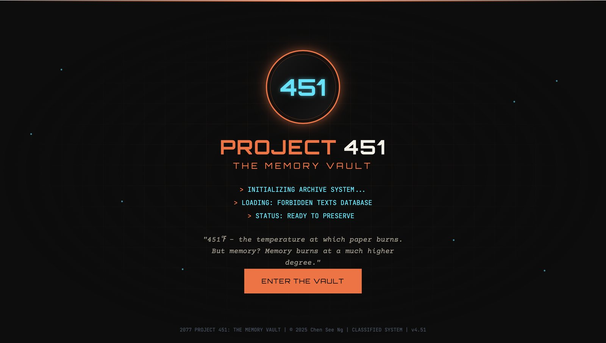
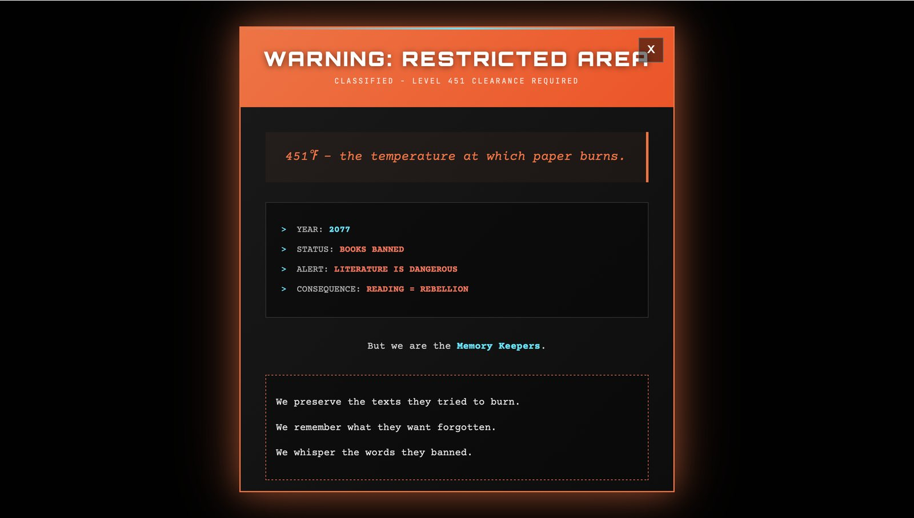
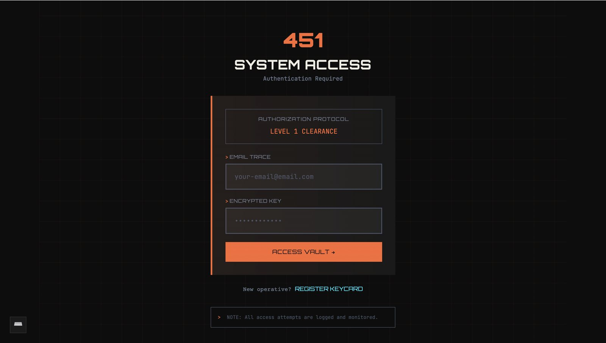
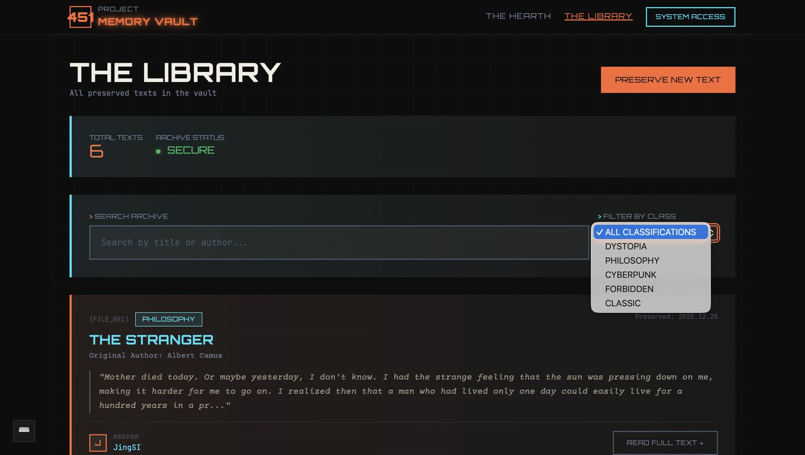

Case File #002
Memory Vault
A full-stack archive where people register as Keepers, claim a book to memorise, and preserve fragments of it before it burns. Astro server-side rendering, Supabase authentication and Postgres, deployed on Netlify.
Concept
Everyone becomes a book
At the end of Ray Bradbury’s Fahrenheit 451, the survivors outside the city have each memorised a single book. They don’t own copies, they are the copies. The knowledge lives only as long as the person does.
A CRUD app is normally a set of forms. This one is that premise made operable. You sign up as a Keeper and claim a book. You preserve text fragments from it into the vault. Other Keepers leave whispers on your fragments.
And the delete button says YES, BURN IT, under a warning that this permanently destroys knowledge, the same thing the firemen did. Delete confirmations are usually the most forgettable screen in an app. Here it’s the one that means the most.
Approach
Five decisions
Server-side rendering, not a client-side SPA
Why Astro inoutput: 'server'
Every page that touches user data (the library, a single text, the profile) queries Supabase in Astro’s server frontmatter and renders HTML. The browser receives a finished page rather than a loading skeleton that fetches its own data.
This also means the ownership checks happen before a byte reaches the client. A user who isn’t the keeper of a text is redirected on the server; the edit form never exists for them to inspect.
Session tokens in httpOnly cookies
The security decision I’d defend in an interview
On login the access and refresh tokens are written as cookies with
httpOnly: true,
sameSite: 'lax',
and secure
enabled in production only, so local development over http still works.
The alternative most tutorials show is localStorage, which any injected script can read. httpOnly means JavaScript can’t touch the token at all. The access token expires in seven days, the refresh token in thirty.
Three tables with real relationships
Why not one flat posts table
keeper_profiles
extends Supabase’s auth users with a keeper name and assigned book.
preserved_texts
belongs to a keeper. whispers
belongs to both a text and a whisperer.
Queries join across them, so the library shows who preserved each
fragment without a second round trip. The profile page counts a
user’s whispers using head: true, returning the count without fetching a single row.
Validate on the server, always
Because the client can be skippedSignup checks that passwords match, that they’re at least six characters, and that the keeper name is at least three, all in the Astro frontmatter, after the form posts. Errors render back into the page rather than into an alert box.
HTML validation attributes are a convenience for the user, not a defence. Anyone can post directly to the endpoint.
A design system inside Tailwind
Extending rather than fighting the frameworkRather than scattering arbitrary values through the markup, the Tailwind config defines the whole language: an ember palette (#FF6B35 primary, #00E5FF secondary, #FF1744 for destructive), three font families, and eight custom keyframe animations: flicker, scan, glow, burn.
The burn
animation is used in exactly one place, on the delete screen. Reserving
an effect for a single moment is what makes that moment land.
Deleting several days of work
The decision I was most reluctant to makeAround the midpoint the code had become disorganised enough that every new feature was slower than the last. I restarted the project from nothing and rebuilt it with the Tailwind configuration done properly from the first line.
It felt like losing days. It was faster by the end of the same week, and it is the reason the design system is coherent rather than accumulated.
Systems
What it does
Authentication
Registration creates both an auth user and a linked keeper profile in one flow.
Full CRUD
Create, read, update and delete preserved texts, each gated behind an ownership check on the server.
Whispers, in real time
Threaded responses using Supabase Realtime, so a new comment appears on every open browser without a refresh.
Two layers of authorisation
Ownership is checked in the Astro server frontmatter, and enforced again by Postgres row-level security policies so the rule holds regardless of what calls the database.
Search & filter
Live search by title or author, plus classification filtering.
Profile
Editable keeper name, assigned book and bio fragment, with counts of texts preserved and whispers sent.
Deployment
Built and deployed as serverless functions, not a static export.
Interface
The vault




Debugging
The bug that looked like nothing
Authentication silently did nothing. Logging in through the Supabase dashboard worked; logging in through my own site produced no error, no redirect and no session. Nothing in the code was wrong.
The redirect URL in the Supabase project was still pointing at port 3000, the default I had assumed. Astro runs on 4321. The request was being sent correctly and answered to an address nothing was listening on.
The useful part was not the fix. It was learning to suspect configuration before logic when a feature fails with no error at all, which is a habit that has saved me several times since.
Reflection
What I’d change
The ones I still think about are the habits rather than the features.
- The Supabase credentials are hardcoded. There’s a
.envfile, correctly gitignored, and then the client module imports nothing from it. The anon key is public by design so nothing leaked, but it means rotating a key would require a code change and a redeploy. - The cascade delete is manual. Deleting a text runs two queries: whispers first, then the text. If the second fails, the whispers are already gone. A foreign key with
ON DELETE CASCADEwould make it atomic and remove the code entirely. - Search filters an already-loaded list. Fine for a class project, wrong at a thousand rows. The query should do the filtering.
- The README is still the Astro starter template. Small, embarrassing, and the first thing anyone opening the repository sees.
Demo account
demo@memoryvault.app
demo1234
Sign in with this to browse the library, preserve a text and leave a whisper, without registering.